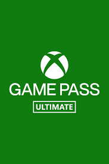
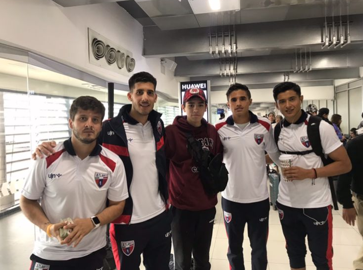
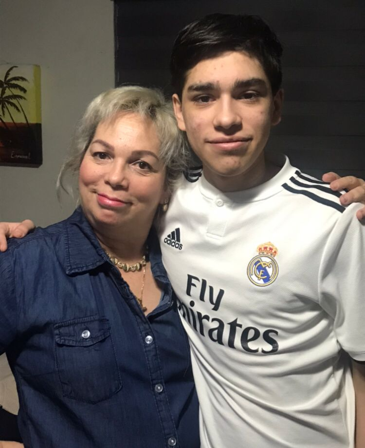
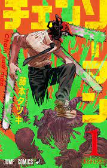

2.- Pasatiempos
Jugar videojuegos

Suelo jugar bastantes videojuegos en mis tiempos libres, ya que desde que entre a la universidad me llego a estresas bastante con las tareas que me encargan y el jugar videojuegos me ayuda mucho a relajarme y dejar de pensar en las tareas por un rato, porque es un tipo de descanso de la realidad y toda la responsabilidad de entrar a la universidad, aveces tambien grabo gameplays y hago directos en twitch de distintos juegos como Halo MCC, Gta 5, Forza Horizon 5, Apex, Call of duty y aveces tambien juego minecraft pero en su version de computadora, pero en si el jugar videojuegos me relaja cuando estoy muy estresado con tareas y no puedo pensar en nada mas, sigo jugando mucho en mis tiempos libres y mas que ya casi acabare el semestre.
Jugar futbol y basquetball
 
Ademas de jugar videojuegos tambien disfruto mucho el jugar deportes para no quedarme tanto tiempo adentro de la casa, disfruto jugar tanto futbol como basquetball, porque desde pequeño practicaba muchos deportes con mi hermano max, pero el que llegue a jugar mas fue el futbol, me llegue a meter a varios equipos y jugaba muchos partidos en los que la mayoria del tiempo jugaba como delantero, pero actualmente no juego tanto futbol por todo el tema de la cuarentena y lo mas que juego es cuando me hermano sebastian viene de visita y salgo con el a jugar futbol en una cancha que esta cerca de la casa, ademas que tambien juego mucho basquetball con mi hermano mequeño milo, cada vez que viene de visita a mi casa.
Leer libros de novelas, comics y mangas

Otro de mi pasatiempo es e ller cualquier cosa que me tope ya sea un comic, libro, novela, manga, historia de terror, suelo leer bastante en mis tiempos libres o durante clases cuando acabo antes lo que encarga el profe, tambien lo hago en mis fines de semana porque me gusta mucho leer porque me relaja mucho el estar yo solo en silencio leyendo, me da mucha paz y me relaja cuando estoy estresado, en cusetion de comics actualmente me estoy leyendo una historia de Spiderman: Superior Spiderman que es bastante larga y me esta entretenido mucho, en el manga me estoy leyendo una historia de varios volumenes del manga de Chainsaw Man y de libros me estoy leyendo un libro de Stephen king de la Torre, la mayoria de libros que leo los compro primero en fisico desde amazon y los leo en mi cuarto, para mi es mejor leerlos en fisico que en internet.
Editar Videos
Tambien disfruto mucho de editar videos de cualquier tipo, ya sea un trabajo, tarea o simplemente como hobby porque tambien suelo subir videos a youtube de unos 5 min o aveces si me emociono hasta 11 min, como los demas hobbies el editar videos me relaja mucho el estar solo por mi cuenta en mi cuarto editando videos en lo que escucho musica de fondo, ademas que tambien disfruto de hacer directos tanto en youtube como en twitch, ya que van varias veces que me topo con un streamer en lo que estoy jugando por mi cuenta y me gusta mucho el ambiente que genera la gente que te sigue y los comentarios que te ponen en ti directo y nose el hacer videos y editarlos me entretiene y relaja mucho, ademas que tambien luego los edito con mis hermanos y me divierto mas con ellos haciendo videos.
Tocar guitarra y ver series

Tambien disfruto mucho del tocar musica en mis tiempos libres ya que con los demas hobbies las cosas que mas me gustan hacer son cosas que me relajen o que este en silencio, pero el estar en mi cuarto tocando musica con mi guitarra me relaja mucho mas que nada por la musica de la guitarra, actualmente sigo practicando guitarra aunque todavia me falta bastante y si me afecta o se me hace mas tardado aprender sin tener que ir a clases en fisico. Otra cosa que disfruto mucho es el ver series con mis hermanos, ya sea en Netflix, Disney plus, Amazon prime o una pelicula que salga en el cine, ya que me divierto mucho de ver series o peliculas tanto de comedia, drama, anime, accion, gore, live action o series hechas a partir de comics como una serie reciente que es la de INVINCIBLE que esta en amazon prime.